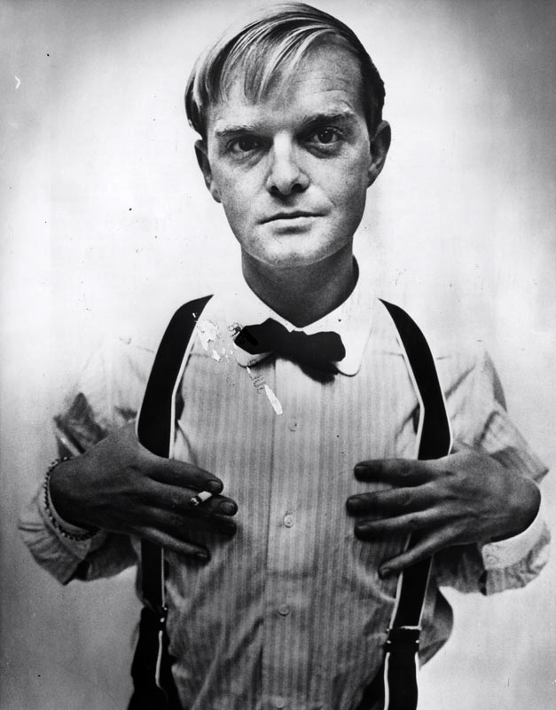

La Forma de las Cosas
Inicio
Reseña
La historia que leí habla sobre un veterano de guerra que critica la hipocresía del pueblo americano. El protagonista guarda rencor a su país por su falta de comprensión hacia los veteranos de guerra, hombres que se marcharon jóvenes a tierras lejanas para defender unos ideales dejando empleo, familia, amigos… y que a su vuelta a la patria se sienten solos, incomprendidos y abandonados.
Esta historia no me apeteció mucha ya que su forma de narrar la historia se me hace confusa y poco de argumentos en mi parecer y además es una historia con un final abierto que te deja con más preguntas de cada uno de los pasajeros del tren. Y para culminar, que este cuento se debe leer unas cuantas veces para entenderle.
Biografia Truman Capote


Truman Streckfus Persons, mejor conocido como Truman Capote, nació en Nueva Orleans, Estados Unidos, el 30 de septiembre de 1924 y fue un destacado periodista y escritor, principalmente conocido por la novela llamada Desayuno en Tiffany’s.
En 1996, Capote escribe la novela A sangre fría, el cual sería su trabajo más celebrado y con ella acuña el término non-fiction-novel, creando un referente para lo que luego sería el nuevo periodismo estadounidense. La novela vendió más de 300 mil ejemplares y fue publicada tras 5 años de intensa investigación. En la misma se relata el asesinato real de la familia Clutter, y es llevada al cine en 1967 por Richard Brooks.
En la década de 1950 reanudó su actividad periodística, realizando entrevistas para la revista Playboy. Uno de los más excéntricos personajes de Capote fue él mismo. Su éxito literario fue acompañado de un gran éxito social, lo que le permitió tratar con intimidad a buena parte de la aristocracia neoyorquina de su época. Capote murió el 25 de agosto de 1984.
Glosario
CONJETAR:
Asumir, dar por sentado, dar por supuesto, no valorar/apreciar, plantear, presumir, sentar, suponer, suponer algo.
BANDAZOS:
Paseo corto, vuelta. Vaivén violento o caída.
ESCRUTURAS:
Indagar, explorar, examinar cuidadosamente [una cosa].
BECHAMEL:
Salsa de mantequilla ocuapda en el contienete Europero.
CREPUSCULO:
Claridad que hay desde que raya el día hasta que sale el Sol, y desde que este se pone hasta que es de noche.
ESCRUTINIO:
Examen y averiguación exacta y diligente que se hace de algo para formar juicio de ello.
GROTESCO:
Ridículo y extravagante.
VERTIGINOSO:
Que causa vértigo.
EMPERO
Sin que sirva de impedimento.
POSESO:
Díc. de la persona que padece posesión, apoderamiento del espíritu por una obsesión.